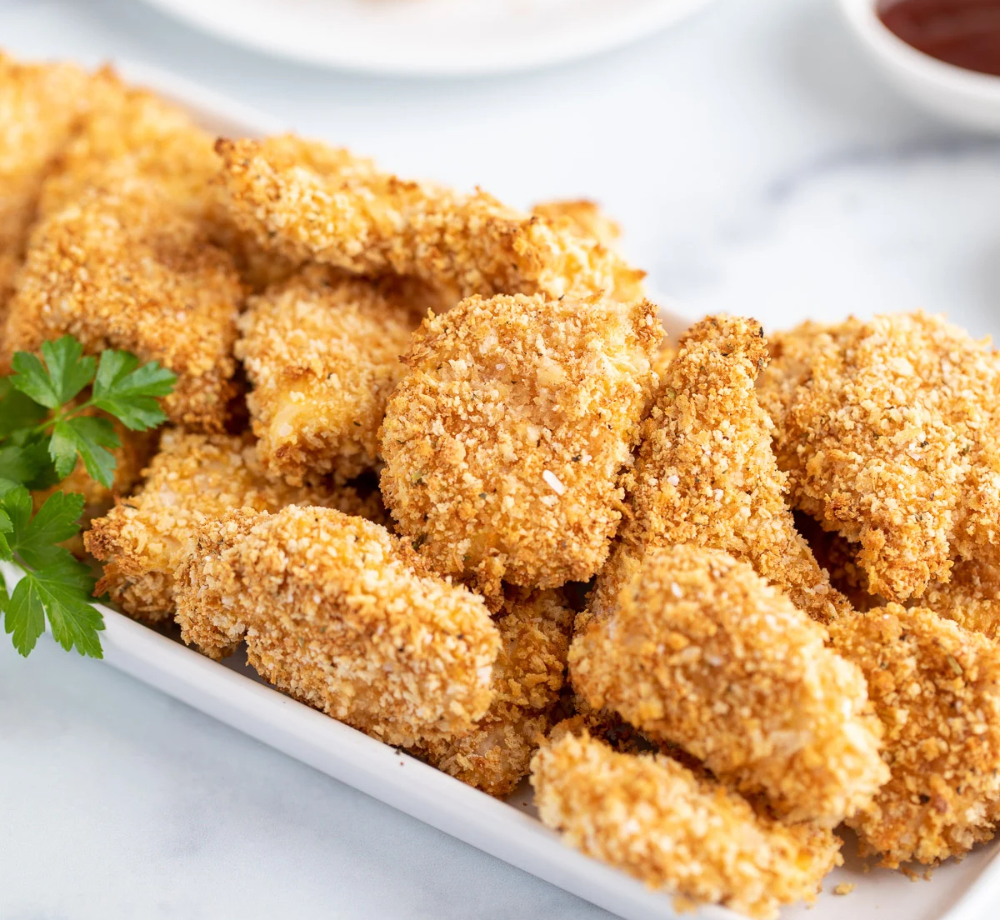

Baked Chicken Nuggets

Description
Chicken meat dipped in egg wash, rolled in panko bread crumbs
and seasoned with paprika and spices, baked into crispy bites!
Ingredients
- Chicken Thighs
- Panko Crumbs
- Salt
- Pepper
- Paprika
- Egg
- Milk
Steps
- Preheat oven to 450F.
- Cut and prepare the chicken thighs, set aside.
- Prepare the egg wash in a shallow dish.
- Mix panko bread crumbs and seasoning in separate bowl until well mixed, set aside.
- Prepare a wire rack over a baking sheet lined with aluminum foil and spray with non-stick spray.
- Using tongs or chopsticks, take each piece of chicken and submerge in the egg wash. Then,
roll in the panko bread mix until covered.
- Place on oiled wire rack about 1in apart from each other. Repeat until all the chicken is dipped
and breaded.
- Bake until golden brown and cooked well on the inside. Enjoy hot with dipping sauce of choice!